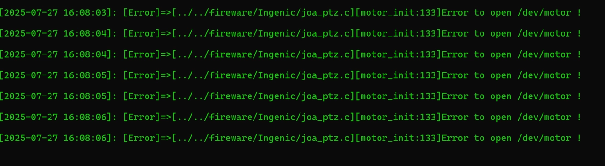
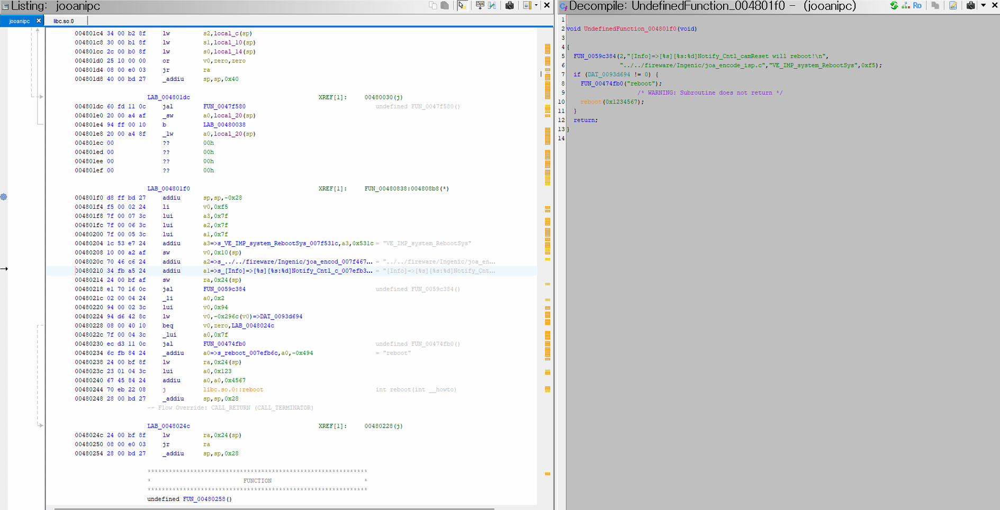
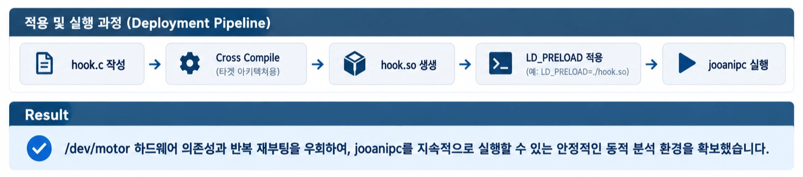

- 정보보안암호수학과 (주전공)
- 소프트웨어전공 (부전공)
Firmware Analysis
키워드

본 프로젝트는 IP 카메라의 펌웨어 구조와 주요 서비스의 동작 방식을 분석하고, 실제 공격 표면에서 발생할 수 있는 보안 취약점을 식별·검증하는 것을 목표로 진행한 프로젝트입니다.
펌웨어 내부의 프로세스와 하드웨어, 웹 서비스, 영상 스트리밍 및 원격 제어 기능 간 연결 관계를 파악하고, 주요 애플리케이션의 동작을 분석할 수 있는 환경을 구성했습니다.
이를 바탕으로 관리자 웹 기능과 주요 네트워크 인터페이스를 분석하고, 실제 장비에서 취약점을 재현·검증하는 과정까지 수행했습니다.
역할
- 총 8명 팀 프로젝트
- 펌웨어 추출 및 파일 시스템 분석 수행
- QEMU 기반 에뮬레이션 환경 구축
- 분석 가이드라인 작성
성과
- Bootloader → Kernel → RootFS 구조 분석 완료
- QEMU 기반에서 임베디드 시스템 부팅 성공
- 사용자 공간 프로그램 동작 흐름 및 역할 파악
시기
- 2025.05 ~ 2025.08
Code / Report
GitHub · yeojin-206/HomeCam-Firmware-AnalysisUsed
LinuxQEMUBinwalkGhidraCflashrom
세부 내용
동적 분석 환경 구축
관리자 웹 페이지의 기능을 분석하려면 대상 프로세스 jooanipc를 실행해야 했지만, 실기기 커널과 하드웨어에 대한 의존성 때문에 QEMU에서 정상적으로 실행되지 않았습니다. 먼저 펌웨어가 MIPS 32bit, Linux 3.10.14 기반임을 확인하고, Buildroot로 동일 버전의 커널을 빌드한 뒤 RootFS를 구성해 QEMU에 올려 기본 실행 환경을 마련했습니다.
이 환경에서 실행을 방해하는 지점은 /dev/motor 접근과 실제 reboot() 호출 두 곳이었습니다. 에뮬레이션 환경에서 모든 하드웨어를 똑같이 재현하기는 어렵기 때문에, 분석에 필요한 의존성과 불필요한 의존성을 구분해 필요한 함수만 선택적으로 후킹하는 방향으로 접근했습니다.
1. 디바이스 의존성 — /dev/motor
QEMU에는 실제 PTZ 모터 장치가 없어 /dev/motor 접근 오류가 발생했습니다. Ghidra로 open() 호출 로직을 확인한 뒤, 해당 경로에 대해서만 선택적으로 open()을 후킹해 유효한 파일 디스크립터를 반환하도록 하여 실행 장애를 우회했습니다.

두 지점을 선택적 후킹으로 우회함으로써 jooanipc를 지속적으로 실행할 수 있는 동적 분석 환경을 확보했고, 이를 바탕으로 관리자 웹 페이지와 연계된 취약점 분석을 진행할 수 있었습니다.
2. 재부팅의 근본 원인 파악
5분마다 시스템이 재부팅돼 디버깅 환경이 자꾸 초기화됐습니다. 재부팅만 막으면 당장은 편하지만 원인을 모른 채 넘어가게 돼서, 코드에서 원인을 찾기로 했습니다. Ghidra 문자열 검색으로 재부팅 심볼(VE_IMP_system_RebootSys)을 찾고, xref로 호출 관계를 거슬러 올라가(main → JooanIPCamAVInit → VE_IMP_system_init → RebootSys) 그 함수를 디컴파일해 reboot() 호출까지 확인했습니다. 여기까지는 코드로 직접 확인한 내용입니다. QEMU에 센서가 없어 초기화가 실패(main sensor init error)하고, 그 뒤 워치독 타이머가 남아 5분 뒤 재부팅되는 흐름으로 봤습니다. 다만 "초기화 실패 때문에 타이머가 해제되지 않는다"는 부분은 코드로 단정한 게 아니라 로그와 동작으로 추정한 내용입니다. 원인을 파악한 뒤 reboot()를 후킹해 분석을 이어갔습니다.


분석 결과를 바탕으로 취약점 검증 수행
동적 분석에서 발견한 취약점을 바탕으로 실기기에 검증하여 취약점 검증을 수행했습니다.
실기기를 사설망에 연결해 HTTP 트래픽을 분석하고, 인증 헤더, 세션 쿠키 없이 /goform/ 관리 엔드포인트에 직접 요청해 아래 세 취약점을 검증한 뒤 벤더사에 신고했습니다. 대표적으로 RTSP 계정이 평문 노출되어 재사용만으로 실시간 스트림에 접속되는 것까지 확인했습니다.
| 신고 항목 | 원인 | 실기기 검증 |
|---|---|---|
| 관리 API 인증 취약점 | 인증 로직 부재 / 인증 키 하드코딩 | 비인가 관리 요청 성공 |
| Firmware Upload 인증 취약점 | 업로드 인증 검증 부재 | 무인증 업로드 수락·플래시 쓰기 개시 |
| ONVIF 인증 취약점 | WS-Security 자격증명 검증 미흡 | PTZ 등 명령 수행 |